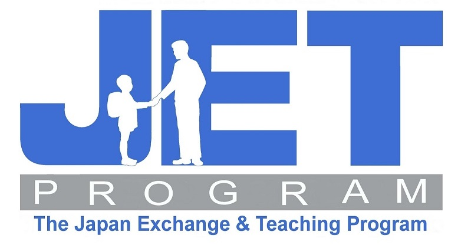

The JET Programme
The Japan Exchange and Teaching (JET) Programme is a Japanese government-run initative which recruits proficient, and often native, English speakers from across the world. Placing these foreigners in schools, boards of education or even local government offices, the aim is to provide cross-cultural exchange for both Japanese students and JET Programme participants (otherwise known as JETs). There are currently almost 5,000 JETs actively working in Japan, and many more JET alumni working for the Japanese government or embassies back in their home countries. The majority of JETs work as Assistant Language Teachers (ALTs) to make the most of their English proficiency. However, some JETs work as Coordinators for International Relations (CIRs) and primarily translate for government officials, teaching communities, and promote international exchange events. There is a third category of JETs who are Sports Exchange Advisors (SEAs), but their role is to assist in sports training and event planning, and thus require recommendation as sports professionals from national Olympic commitees or other related government organisations. Cultural exchange doesn't just stop at work, but continues in all aspects of living in Japan and being a part of the local community. Japanese classes, social clubs and festivals are just a few ways in which JETs are expected to embrace their new environment.
The life of a JET isn't actually too bad. JETs are paid a decent salary, at approximately 3.3 million yen ($39,000 AUD) per year. There should be no reason a JET cannot survive and thrive in Japan, even after paying the bills. Furthermore, the main organisation administering for the JET Programme, Council of Local Authorities for International Relations (CLAIR), provides continuous support for JETs. Conferences, training, publications, resources, and even career support coming out of JET are at your disposal. There are often CIRs in your city or prefecture who can also help. The support network is huge! Not only that, but CLAIR also understands the needs of JETs and have created special interest groups for like-minded JETs to plan, gather and have fun together. It's like going back to college again!
The best part of the JET Programme is that the only requirement for applying (excl. SEAs) is having obtained a Bachelor's degree in ANYTHING! Graduated from Commerce? Physics? Engineering? Fine Arts? That's perfect! Anyone who is keen to live and work in Japan has a shot. Do you have what it takes to promote internationalisation in Japan? More information on the JET Programme can be found on their website.
Got questions? Please check out the JET FAQ page before contacting me.